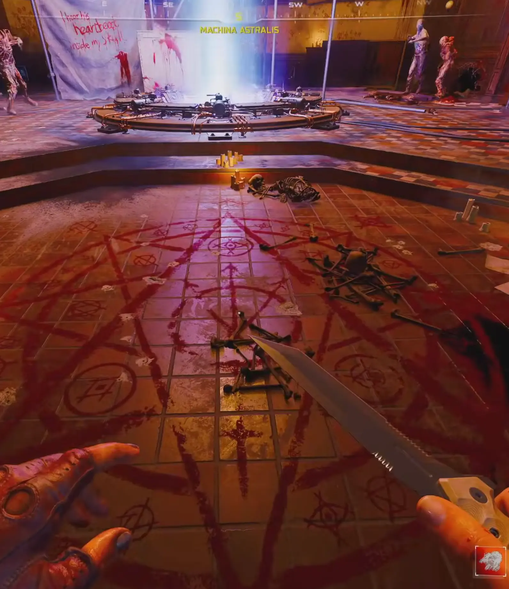

Zadanie wymaga gry na poziomie trudności Tier 2 w trybie Klątwa. Wyzwanie aktywuje się od rundy 60+.
Waszym pierwszym celem jest dotarcie do sekcji Mars na mapie Astra Malorum w ramach postępów w głównym zadaniu. Zanim tam ruszycie, musicie mieć w łapach:
To zadanie wymaga wyczucia czasu i sporej ilości trupów na mapie:

W lokacji Miejsce Katastrofy, między automatem Quick Revive a maszyną GobbleGum, pojawi się czerwony portal.
PRO TIP: Cudowna broń LGM-1 jest tu totalną miazgą, ponieważ naturalnie używa się jej do strzelania z biodra i ma nieskończoną amunicję.
To prawdziwe wyzwanie dla twardzieli